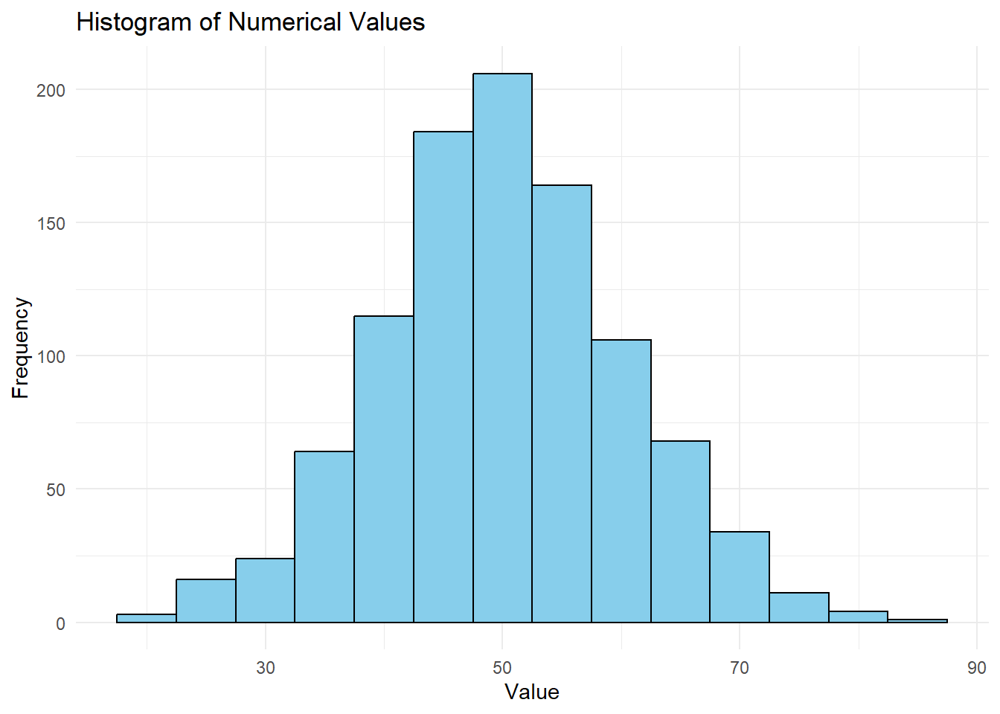
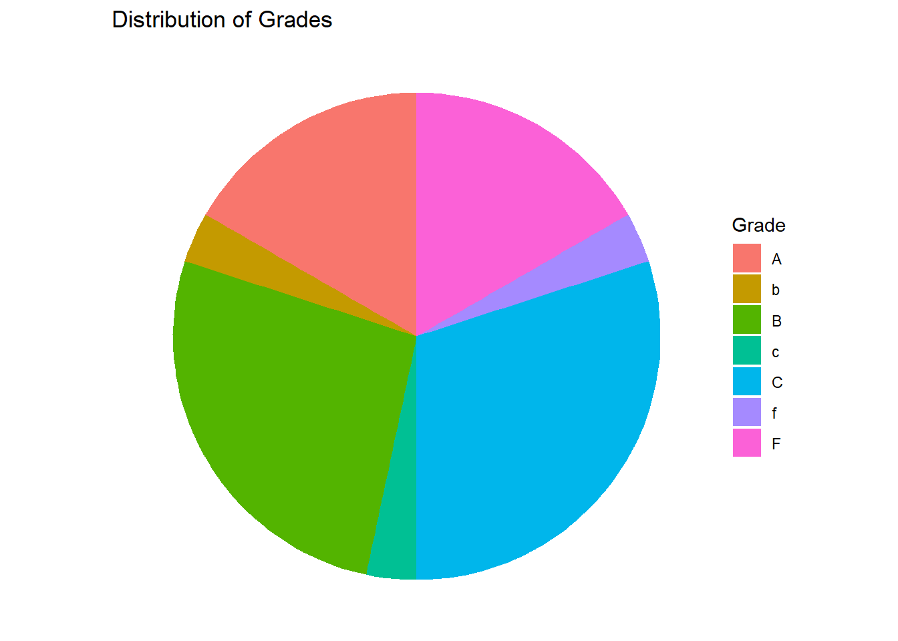
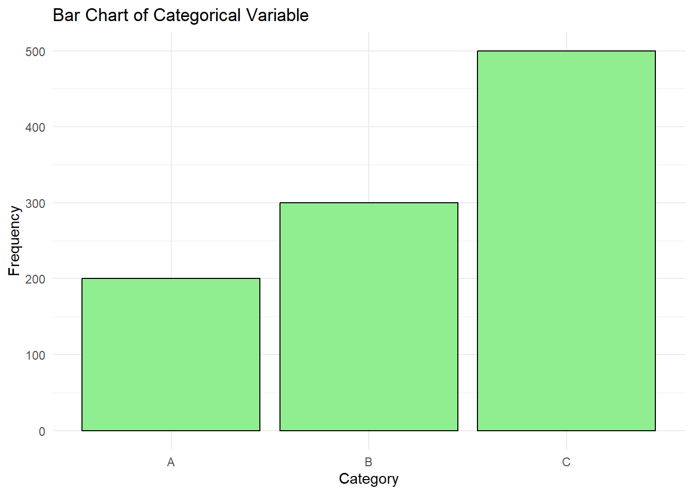
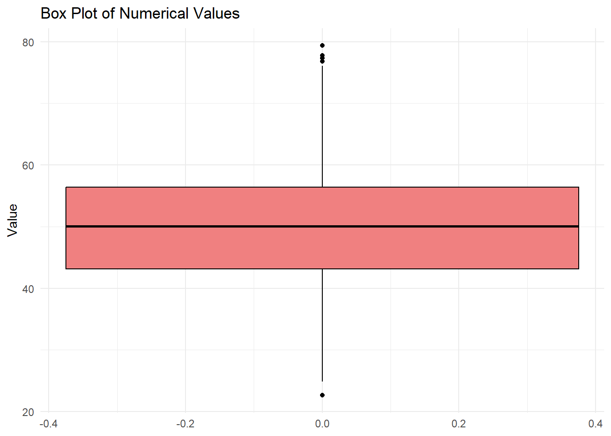
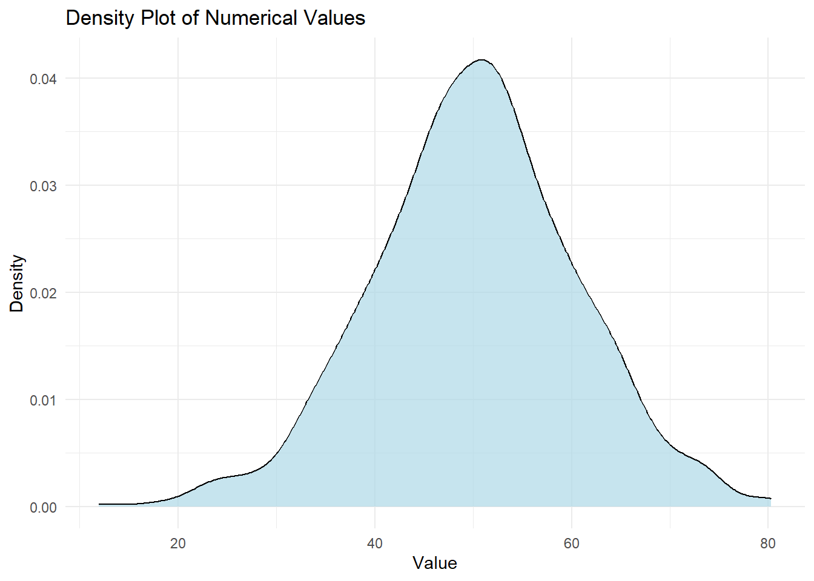
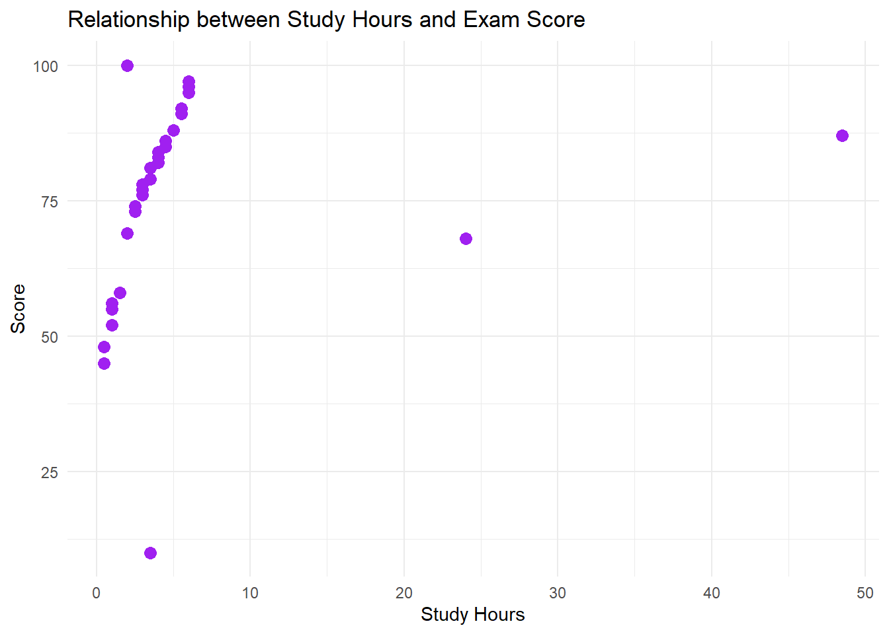
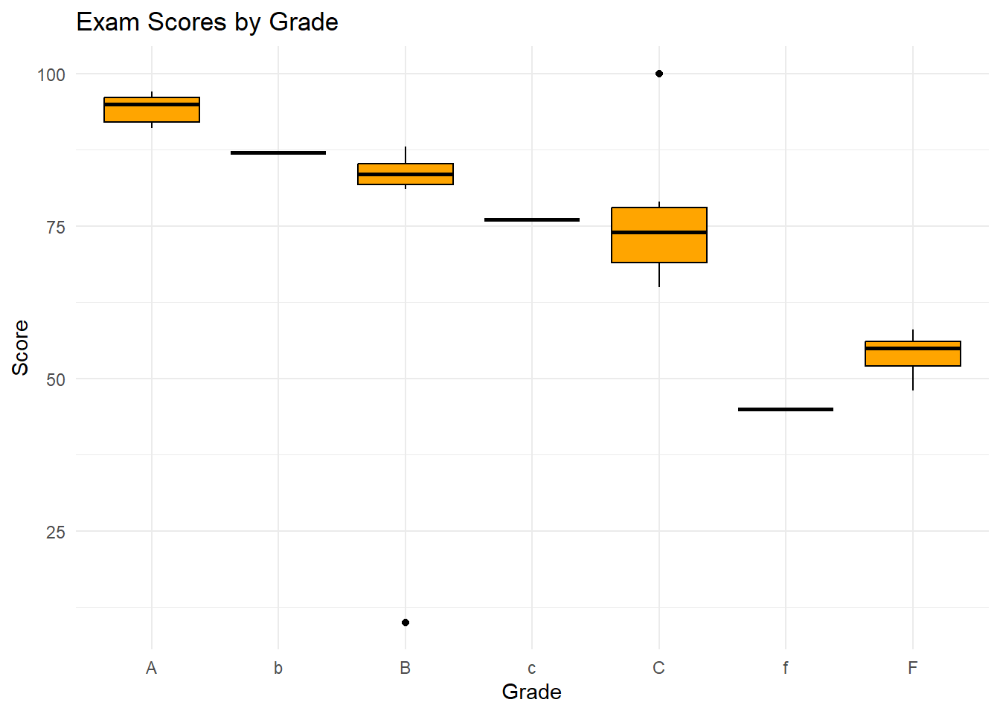
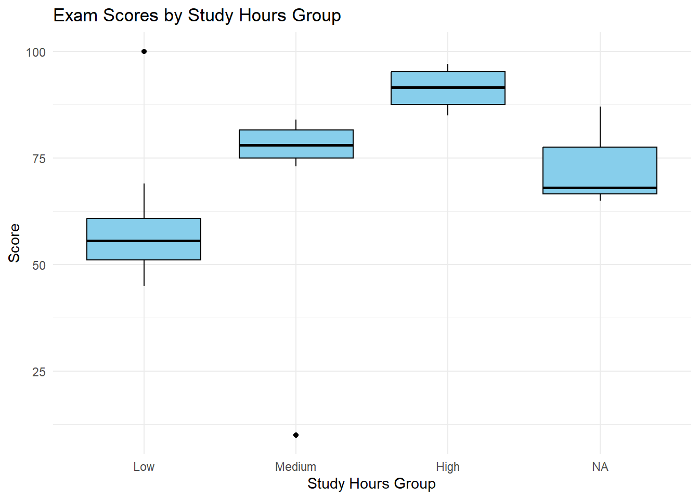
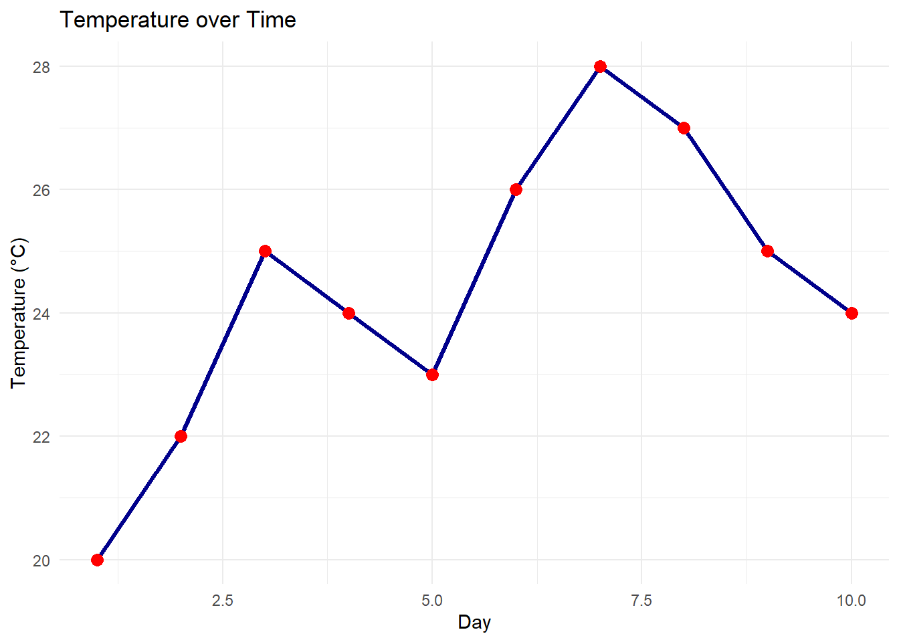
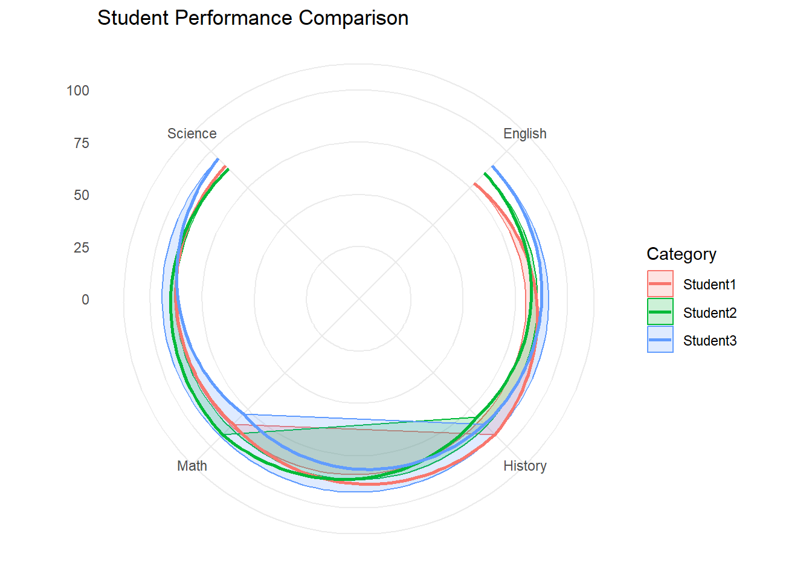

In this section, we will delve into the techniques for visualizing a single variable, which is a fundamental aspect of exploratory data analysis (EDA). Understanding the distribution and characteristics of individual variables is crucial before exploring relationships between multiple variables.
5.2 Introduction to Visualizing a Single Variable
Visualizing a single variable helps us understand its distribution, central tendency, and spread. This provides valuable insights into the data’s characteristics and potential anomalies. In this section, we will explore different types of plots suitable for single-variable visualization using ggplot2.
5.2.1 Histograms
Histograms are used to visualize the distribution of a numerical variable by dividing the data into bins and counting the number of observations in each bin.
5.2.1.1 Example 1: Creating a Histogram
library(tidyverse)
Warning: package 'tidyverse' was built under R version 4.2.3
Warning: package 'ggplot2' was built under R version 4.2.3
Warning: package 'tibble' was built under R version 4.2.3
Warning: package 'tidyr' was built under R version 4.2.3
Warning: package 'readr' was built under R version 4.2.3
Warning: package 'purrr' was built under R version 4.2.3
Warning: package 'dplyr' was built under R version 4.2.3
Warning: package 'stringr' was built under R version 4.2.3
Warning: package 'forcats' was built under R version 4.2.3
Warning: package 'lubridate' was built under R version 4.2.3
── Attaching core tidyverse packages ──────────────────────── tidyverse 2.0.0 ──
✔ dplyr 1.1.2 ✔ readr 2.1.4
✔ forcats 1.0.0 ✔ stringr 1.5.0
✔ ggplot2 3.4.3 ✔ tibble 3.2.1
✔ lubridate 1.9.2 ✔ tidyr 1.3.0
✔ purrr 1.0.2
── Conflicts ────────────────────────────────────────── tidyverse_conflicts() ──
✖ dplyr::filter() masks stats::filter()
✖ dplyr::lag() masks stats::lag()
ℹ Use the conflicted package (<http://conflicted.r-lib.org/>) to force all conflicts to become errors
# Sample data (replace with your data)data <-data.frame(values =rnorm(1000, mean =50, sd =10))# Creating a histogramggplot(data, aes(x = values)) +geom_histogram(binwidth =5, fill ="skyblue", color ="black") +labs(title ="Histogram of Numerical Values",x ="Value",y ="Frequency") +theme_minimal()

5.2.2 Histograms
Histograms are an extremely common way to visualize the distribution of a single numerical variable. It groups the data into bins, and displays the frequency of the data in each bin as a vertical bar. This type of chart is extremely common, and is one of the easiest way to visualize your data.
exam_scores <-read.csv("https://raw.githubusercontent.com/sijuswamyresearch/R-for-Data-Analytics/refs/heads/main/data/exam_scores.csv")ggplot(exam_scores, aes(x = study_hours)) +geom_histogram(binwidth =1, fill ="steelblue", color ="white") +labs(title ="Histogram of Study Hours", x ="Study Hours", y ="Frequency") +theme_minimal()
Pie charts are commonly used to visualize the proportions or percentages of different categories within a categorical variable. While simple, they can be less effective than other chart types when dealing with many categories or subtle differences in proportions.
#Create a data frame to displayexam_scores <-read.csv("https://raw.githubusercontent.com/sijuswamyresearch/R-for-Data-Analytics/refs/heads/main/data/exam_scores.csv")grade_counts <- exam_scores %>%group_by(grade) %>%summarize(count =n())ggplot(grade_counts, aes(x ="", y = count, fill = grade)) +geom_bar(stat ="identity", width =1) +coord_polar("y", start =0) +labs(title ="Distribution of Grades", fill ="Grade") +theme_void()

Explanation:
stat = "identity": Tells geom_bar to use the provided count values directly, instead of counting them.
coord_polar("y", start = 0): Transforms the bar chart into a pie chart.
theme_void(): Removes unnecessary chart elements for a cleaner look.
Interpreting Pie Charts:
Proportions: The size of each slice represents the proportion of that category within the whole.
Dominant Categories: Easily identify the largest and smallest categories.
Note
Pie charts can be difficult to interpret accurately, especially with many slices of similar size. Consider using bar charts or other visualizations for better clarity.
5.2.4 Bar Charts
Bar charts are used to visualize the distribution of a categorical variable by displaying the frequency or proportion of each category.
# Sample data data <-data.frame(categories =factor(rep(c("A", "B", "C"), times =c(200, 300, 500))))# Creating a bar chartggplot(data, aes(x = categories)) +geom_bar(fill ="lightgreen", color ="black") +labs(title ="Bar Chart of Categorical Variable",x ="Category",y ="Frequency") +theme_minimal()

5.2.5 Box Plots
Box plots provide a concise summary of the distribution of a numerical variable, showing the median, quartiles, and potential outliers.
# Sample datadata <-data.frame(values =rnorm(1000, mean =50, sd =10))# Creating a box plotggplot(data, aes(y = values)) +geom_boxplot(fill ="lightcoral", color ="black") +labs(title ="Box Plot of Numerical Values",y ="Value") +theme_minimal()

5.2.6 Density Plots
Density plots provide a smoothed representation of the distribution of a numerical variable.
# Sample data data <-data.frame(values =rnorm(1000, mean =50, sd =10))# Creating a density plotggplot(data, aes(x = values)) +geom_density(fill ="lightblue", alpha =0.7) +labs(title ="Density Plot of Numerical Values",x ="Value",y ="Density") +theme_minimal()

Choosing the Right Visualization
Numerical Variable: Histograms, box plots, and density plots are suitable for visualizing numerical variables.
Categorical Variable: Bar charts are used to visualize categorical variables.
5.3 Practice
Load a dataset containing both numerical and categorical variables.
Create histograms, bar charts, box plots, and density plots to visualize single variables.
Interpret the characteristics and distribution of each variable based on the visualizations.
Identify potential outliers or anomalies.
5.4 Bivariate visualization
In this section, we’ll extend our exploration of data by examining relationships between two variables simultaneously. This is called bivariate exploratory data analysis (EDA). We’ll focus on using ggplot2 to create visualizations that reveal patterns, correlations, and dependencies between variables.
5.5 What is Bivariate EDA?
Bivariate EDA helps you answer questions like:
Is there a relationship between these two variables?
How strong is the relationship?
Is the relationship positive or negative?
Does the relationship vary across different groups?
5.6 Scatter Plots
Scatter plots visualize the relationship between two numerical variables. Each point on the plot represents a single observation, with its position determined by its values for the two variables.
library(tidyverse)#Replace with your local file, or paste dataset info hereexam_scores <-read.csv("https://raw.githubusercontent.com/sijuswamyresearch/R-for-Data-Analytics/refs/heads/main/data/exam_scores.csv")ggplot(exam_scores, aes(x = study_hours, y = score)) +geom_point(color ="purple", size =3) +labs(title ="Relationship between Study Hours and Exam Score", x ="Study Hours", y ="Score") +theme_minimal()

Explanation:
ggplot(exam_scores, aes(x = study_hours, y = score)): Creates a ggplot object, specifying the dataset (exam_scores) and the two variables to visualize (study_hours and score).
geom_point(): Adds a scatter plot layer to the plot.
color = "purple", size = 3: Sets the color and size of the points.
labs(...): Adds a title and axis labels to the plot.
theme_minimal(): Applies a minimalist theme for a cleaner look.
Interpreting Scatter Plots:
Direction: Is the relationship positive (as x increases, y increases), negative (as x increases, y decreases), or non-existent?
Strength: How closely do the points cluster around a line or curve? A tight cluster indicates a strong relationship.
Form: Is the relationship linear, non-linear (curved), or clustered?
Outliers: Are there any points that deviate significantly from the overall pattern?
5.7 Box Plots
Side-by-side box plots compare the distribution of a numerical variable across different categories of a categorical variable.
ggplot(exam_scores, aes(x = grade, y = score)) +geom_boxplot(fill ="orange", color ="black") +labs(title ="Exam Scores by Grade", x ="Grade", y ="Score") +theme_minimal()

Explanation:
aes(x = grade, y = score): Maps the grade column to the x-axis (categorical variable) and the score column to the y-axis (numerical variable).
Interpreting Side-by-Side Box Plots:
Median Differences: Are the medians significantly different across categories?
Spread Differences: Do the categories have different levels of variability?
Outliers: Are there more outliers in some categories than others?
Overlap: How much do the distributions of the categories overlap?
5.7.1 Exploring the Impact of Study Hours: Why Group?
We’ve seen how grade (a letter grade) relates to score using a side-by-side boxplot. Now, let’s consider the impact of study hours on exam performance. We suspect that students who study more tend to get higher scores. However, study_hours is a numerical variable, and it might not make sense to treat each specific hour value as a separate category. We want to see if students in general can improve a test score given different hours of study.
Instead, we can group study hours into meaningful ranges like “Low,” “Medium,” and “High.” This will allow us to compare the distribution of exam scores for students with different levels of study commitment. This also gives the benefit of avoiding a test set that is more confusing, or hard to see the individual data points. This also gives an extra layer of generality, since we may want to test this dataset against other student data.
Here’s how we can create those groups in R and then visualize the relationship with a boxplot.
exam_scores <- exam_scores %>%mutate(study_hours_group =cut(study_hours,breaks =c(0, 2, 4, 6),labels =c("Low", "Medium", "High"),include.lowest =TRUE) )ggplot(exam_scores, aes(x = study_hours_group, y = score)) +geom_boxplot(fill ="skyblue", color ="black") +labs(title ="Exam Scores by Study Hours Group", x ="Study Hours Group", y ="Score") +theme_minimal()

5.8 Line Plots
Line plots visualize trends in a numerical variable over time or across an ordered category.
Note:
Our exam_scores dataset doesn’t have a time component, so we’ll create a simple example.
#If there isn't a time component, we'll create a simple example.day <-1:10temperature <-c(20, 22, 25, 24, 23, 26, 28, 27, 25, 24)weather_data <-data.frame(day, temperature)ggplot(weather_data, aes(x = day, y = temperature)) +geom_line(color ="darkblue", linewidth =1.2) +geom_point(color ="red", size =3) +labs(title ="Temperature over Time", x ="Day", y ="Temperature (°C)") +theme_minimal()

Explanation:
geom_line(): Adds a line connecting the data points.
geom_point(): Adds points at each data point for clarity.
Interpreting Line Plots:
Trends: Is the variable increasing, decreasing, or stable over time?
Seasonality: Are there any repeating patterns?
Cyclicality: Are there any longer-term cycles?
Outliers: Are there any sudden spikes or dips?
5.8.1 Cobweb Plot (Radar Chart)
Cobweb plots, also known as radar charts, are useful for comparing multiple quantitative variables for several different items. The values for each variable are plotted along spokes radiating from a center point. This type of chart works best when comparing items across a limited number of variables (usually less than 10) and when the relative values are more important than the absolute values.
library(tidyverse)# Create a sample datasetdata <-data.frame(Category =c("Student1", "Student2", "Student3"),Math =c(85, 92, 78),Science =c(90, 88, 95),English =c(78, 85, 90),History =c(92, 80, 85))# Reshape the data for plottingdata_long <- data %>%pivot_longer(cols =-Category, # Exclude the 'Category' columnnames_to ="Variable",values_to ="Value" )# Create the radar chartggplot(data_long, aes(x = Variable, y = Value, group = Category, color = Category)) +geom_polygon(alpha =0.2, aes(fill = Category)) +# Fill the areageom_line(size =1) +# Add lines connecting the data pointscoord_polar() +# Convert to polar coordinatesylim(0, 100) +# Set the y-axis limits (adjust based on your data)labs(title ="Student Performance Comparison",x =NULL, y =NULL) +theme_minimal()
Warning: Using `size` aesthetic for lines was deprecated in ggplot2 3.4.0.
ℹ Please use `linewidth` instead.

5.9 Multi variable plots in R
In this section, we will explore how to examine multiple variables simultaneously. This is a fundamental step in understanding relationships, dependencies, and patterns within a dataset. We’ll cover visualizations and methods that help uncover these insights.
# Sample data data <-data.frame(category =factor(rep(c("A", "B", "C"), times =c(30, 35, 35))),value =c(rnorm(30, mean =40, sd =5),rnorm(35, mean =50, sd =7),rnorm(35, mean =60, sd =8)))# Creating a box plotggplot(data, aes(x = category, y = value)) +geom_boxplot(fill ="orange", color ="black") +labs(title ="Box Plot of Value by Category",x ="Category",y ="Value") +theme_minimal()